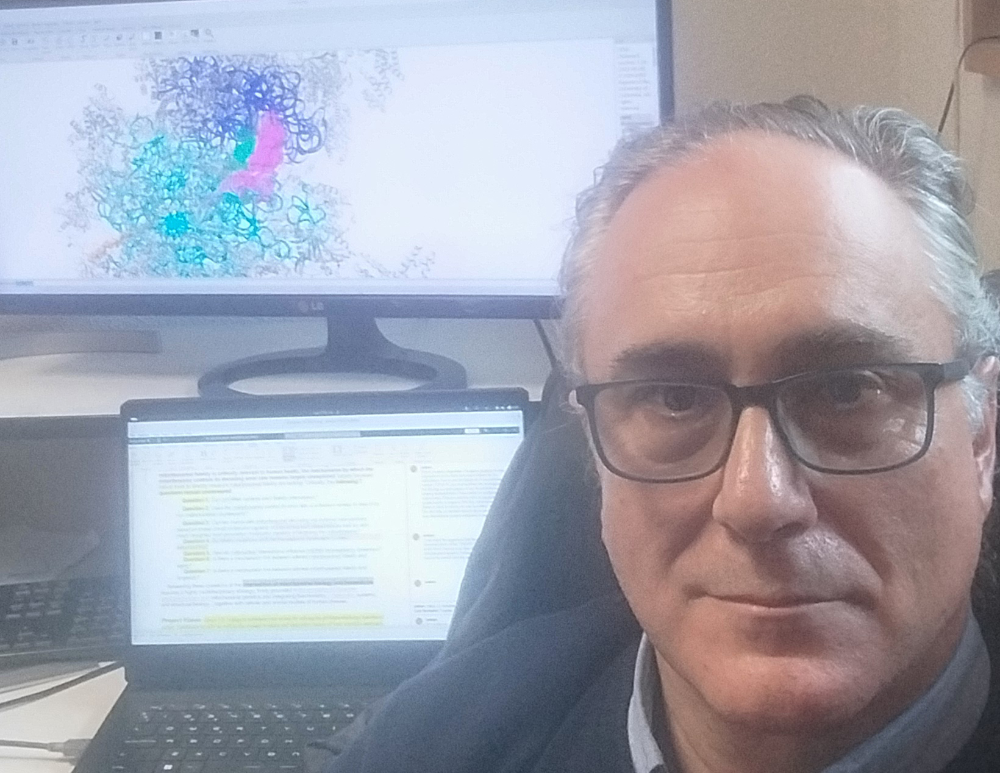

Antón Vila‑Sanjurjo · Associate Professor of Genetics, Universidade da Coruña · Ph.D. in Biology, Brown University (Providence, RI), 2001

Antón Vila‑Sanjurjo is Associate Professor of Genetics at the Universidade da Coruña (UDC), Spain.
The AVS Lab investigates ribosome structure and function, mitochondrial translation, and translational fidelity, with particular emphasis on conceptual and structure‑based frameworks to interpret mitochondrial rRNA variation in human disease.
He received his Ph.D. in Biology from Brown University (Providence, Rhode Island, USA) in May 2001. His doctoral research, supervised by Albert E. Dahlberg, examined the genetic and structural basis of decoding accuracy in the Escherichia coli 16S rRNA decoding center.